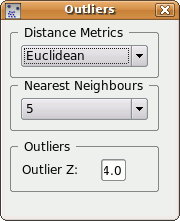
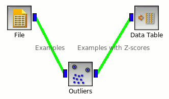

This is documentation for Orange 2.7. For the latest documentation, see Orange 3.
Outliers¶
Simple outlier detection by comparing distances between examples.
Signals¶
- Inputs:
- Examples (ExampleTable)
Attribute-valued data set.
- Distance matrix
A matrix of example distances.
- Outputs:
- Outliers (ExampleTable)
Attribute-valued data set containing only examples that are outliers. Meta attribute Z-score is added.
- Inliers (ExampleTable)
Attribute-valued data set containing only examples that are not outliers. Meta attribute Z-score is added.
- Examples with Z-scores (ExampleTable)
Attribute-valued data set containing examples from input data with corresponding Z-scores as meta attribute.
Description¶
Outliers widget first computes distances between each pair of examples in input Examples. Average distance between example to its nearest examples is valued by a Z-score. Z-scores higher than zero denote an example that is more distant to other examples than average. Input can also be a distance matrix: in this case precalculated distances are used.
Two parameters for Z-score calculation can be choosen: distance metrics and number of nearest examples to which example’s average distance is computed. Also, minimum Z-score to consider an example as outlier can be set. Note, that higher the example’s Z-score, more distant is the example from other examples.
Changes are applied automatically.
Examples¶
Below is a simple example how to use this widget. The input is fed directly from the File widget, and the output Examples with Z-score to the Data Table widget.
